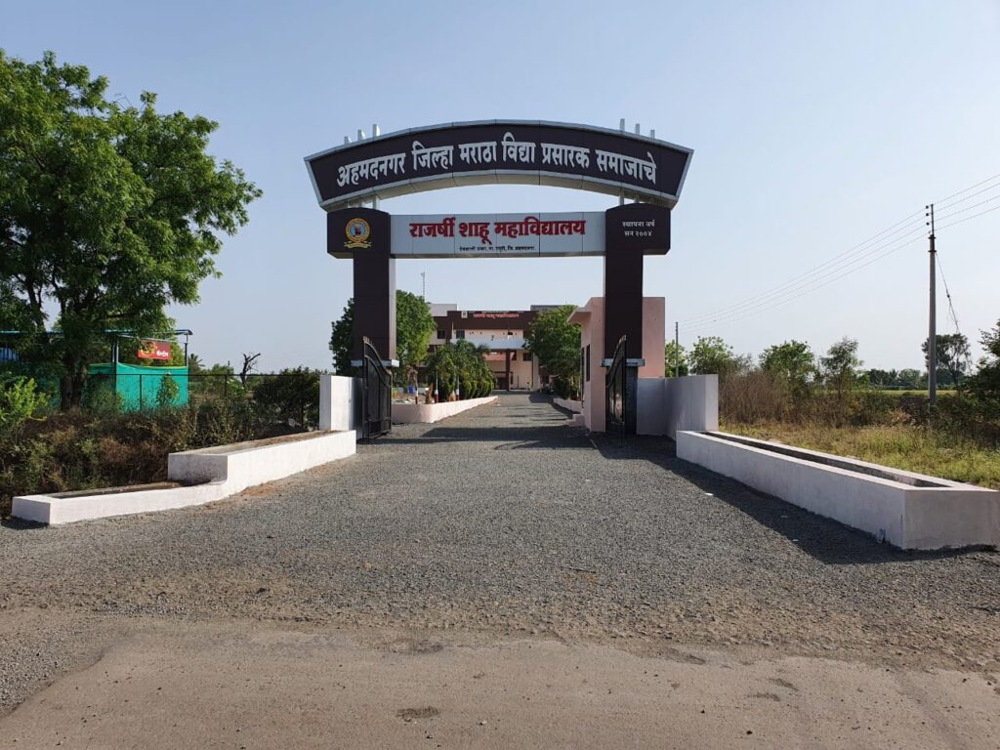

College Information
COLLEGE NAME:Rajarshi Shahu Mahavidyalaya Deolali Pravara.
PHOTO:

ABOUT:
Rajarshi Shahu Mahavidhyalaya is established in August 2004 by Ahmednagar Jilha Maratha Vidhya Prasarak Samaj, Ahmednagar. The college is permanently non-grant and affiliated to Savitribai Phule Pune University, Pune. The Main aim to establish the college in an area like Deolali Pravara is to provide higher education to the student from rural area. The facility to enroll in faculty like computer science, science, B.C.A and Arts opens the gates of many job opportunities to them. It is noticeable that our college was the first college to provide courses in computer science and B.C.A. in Rahuri tahashil.
Go to Homepage🏠